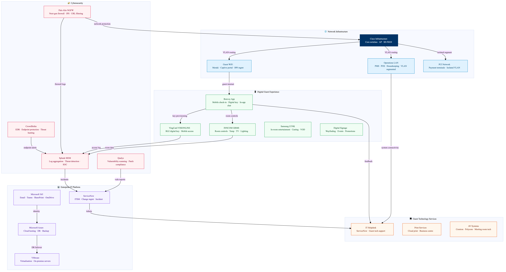

This diagram maps the Marriott IT and digital guest experience technology stack. The property network is segmented into guest WiFi, operational LAN, and PCI-scoped payment networks, all managed through Cisco infrastructure with Palo Alto Networks NGFW and SIEM monitoring. The digital guest experience layer centres on the Bonvoy App providing mobile check-in, digital key, in-app chat, and room controls via INNCOM. In-room entertainment runs on Samsung LYNK systems. Cybersecurity monitoring feeds into Marriott's enterprise SOC with Splunk for SIEM, Qualys for vulnerability management, and CrowdStrike for endpoint protection.